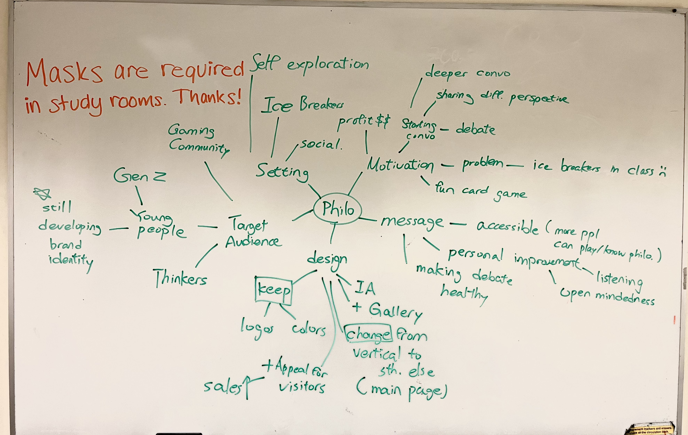
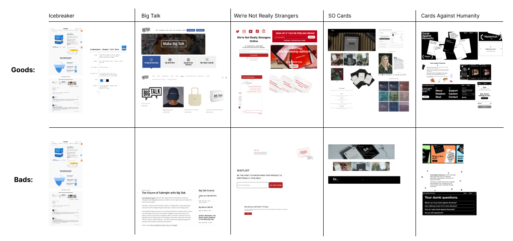
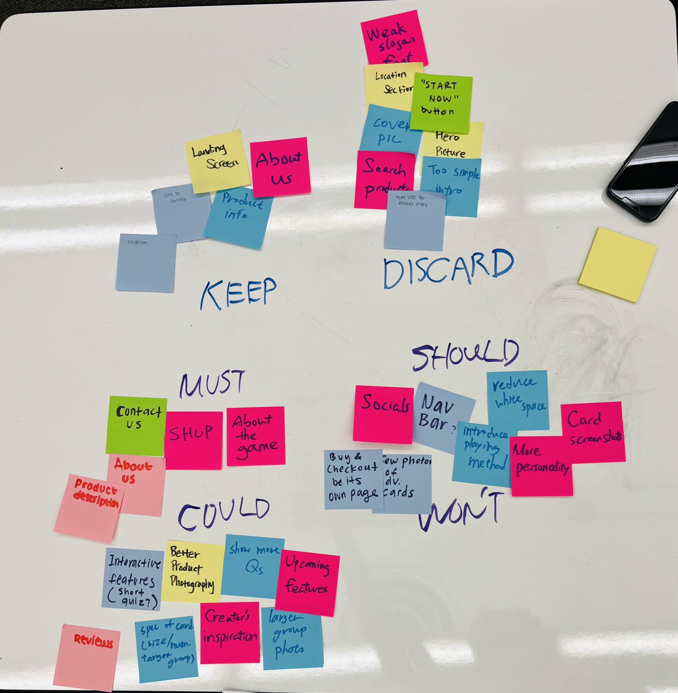
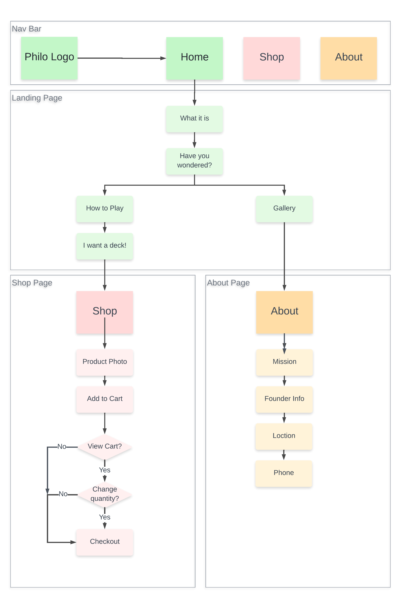

Research
We kickstarted our project with a client interview to seek out their needs and desires with the new Philo Cards website.
With what we learned, we created a mind map that focalizes the goal of the website in order to guide us through the design proceess.

Because we were redesigning a pre-existing website for a client rather than creating a product from scratch,
we chose to focus on researching competitor products. In our informal competitor analysis, we researched five different products
that were similar to Philo Cards, and noted the well and poor designs on their website. We then compiled our findings
on a spreadsheet to find general design patterns that we wanted to follow, as well as design flaws that we wanted to avoid.

Information Architecture
To start, we made a list of features that could possibly be on the site. This was largely taken from features on the pre-existing sites,
additional functions our client wanted us to impelement, and cool add-ons that we found through our competitor analysis. Then, we organized
these on a MoSCoW chart to identify which features are the most important and which are the least. This map was adjusted many times based on
further research and user interviews, and after we had a well-refined list, we organized it into our site map.

In our site map, we organized the different features we wanted to include in a way that best represents the flow of the map. This helped
us set up the design of each page while maintaining overall functionality of the site.
